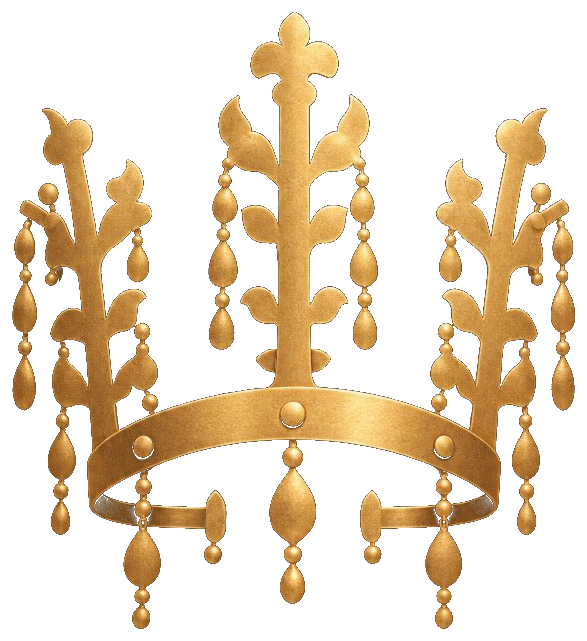

금
화학적으로 매우 안정하여 녹슬지 않습니다. 전성과 연성이 금속 가운데 가장 큰 편이라, 얇은 판으로 펴고 오리고 구부려 금관·관모·허리띠를 만들 수 있었습니다. 경도와 강도는 낮아 충격과 접힘에는 약합니다. 보존의 핵심은 부식이 아니라 얇은 판의 변형과 장식 탈락입니다.

금속문화재박물관 METAL HERITAGE MUSEUMMaterials Science
문화재의 재료가 다르면 만드는 법도, 오래 남는 법도 다릅니다. 이 전시에 반복해서 등장하는 다섯 금속 — 금, 은, 구리, 주석, 철 — 의 특징과, 그 금속을 두드리고 구부리고 주조할 때 쓰는 기계적 성질을 정리합니다.
아래는 일반적인 금속학 지식입니다. 특정 유물의 합금비나 경도 값은, 그 유물의 분석자료가 확인된 경우에만 수치로 적습니다.
기계적 성질은 힘을 받았을 때 금속이 어떻게 버티고, 늘어나고, 깨지는지를 말합니다. 장인이 판금·단조·주조를 고른 이유와, 오늘날 전시·보관에서 무엇을 조심해야 하는지가 여기에 있습니다.
외부 힘에 저항하는 능력입니다. 철 갑옷은 강도가 높아 방어구가 되었고, 금관은 강도가 낮아 자체 무게와 충격만으로도 휘어질 수 있습니다.
긁힘과 찍힘에 견디는 성질입니다. 순금은 연해서 손톱에도 자국이 남을 수 있고, 주석을 더한 청동은 구리보다 단단해질 수 있습니다. 유물 표면을 세게 닦는 일은 경도가 낮은 금속에 특히 위험합니다.
두드리거나 눌러 얇은 판으로 펴지는 성질입니다. 금의 전성이 신라 금관·관모의 얇은 판금 기술을 가능하게 했습니다. 전성이 큰 금속은 가공에는 유리하지만, 보존 중에도 쉽게 납작해집니다.
끊어지지 않고 가늘고 길게 늘어나는 성질입니다. 금실·은선을 뽑아 누금과 은입사에 쓸 수 있었던 이유입니다. 연성이 큰 연결부는 늘어나 헐거워지거나, 반대로 반복해서 구부리면 피로로 끊어질 수 있습니다.
힘을 제거하면 원래 형태로 돌아오려는 성질입니다. 성덕대왕신종 같은 범종은 탄성 진동으로 소리를 냅니다. 큰 종을 습관적으로 치면 탄성 한도를 넘어 균열이 생길 수 있습니다.
갑자기 깨지지 않고 에너지를 흡수하며 버티는 성질입니다. 인성이 큰 금속은 충격에 구부러지고, 인성이 작은 금속은 금이 가거나 부러집니다. 부식된 철·청동은 인성이 떨어져 작은 충격에도 약해질 수 있습니다.
거의 늘어나지 않고 깨지는 성질입니다. 부식층이 두꺼운 청동기, 주조 결함이 있는 대형 종, 녹이 진행된 철 갑옷에서 취성이 커질 수 있습니다. 겉보기에는 단단해도 떨어뜨리면 쪼개집니다.
녹여 거푸집에 부었을 때 형태를 채우는 성질입니다. 구리계 합금은 주조성이 좋아 반가사유상·향로·총통·종을 만들었습니다. 주조 유물은 기공과 균열이 숨겨져 있을 수 있어, 내부 상태를 함께 봐야 합니다.
원소 함량·합금비·경도 수치는 해당 유물의 과학적 분석자료가 확인된 경우에만 표기합니다. 이 페이지의 설명은 문화재재료학에서 쓰는 일반적인 금속 성질입니다.